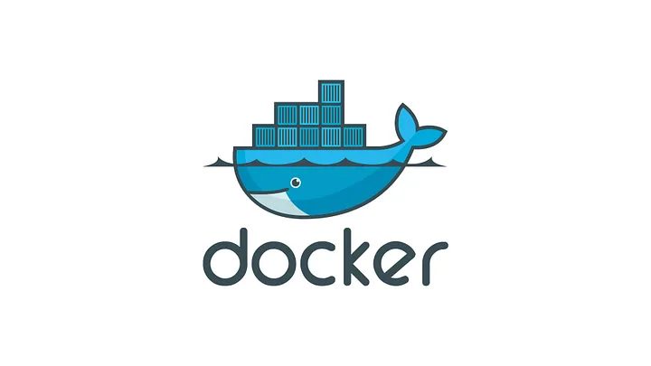
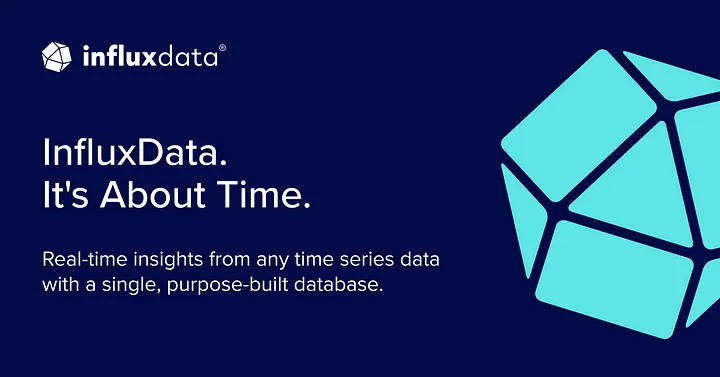
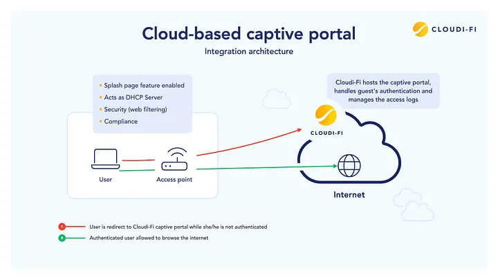
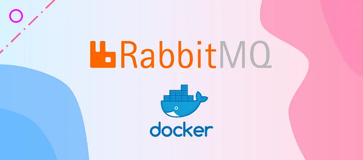
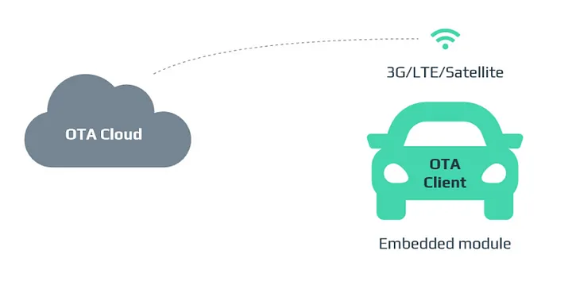
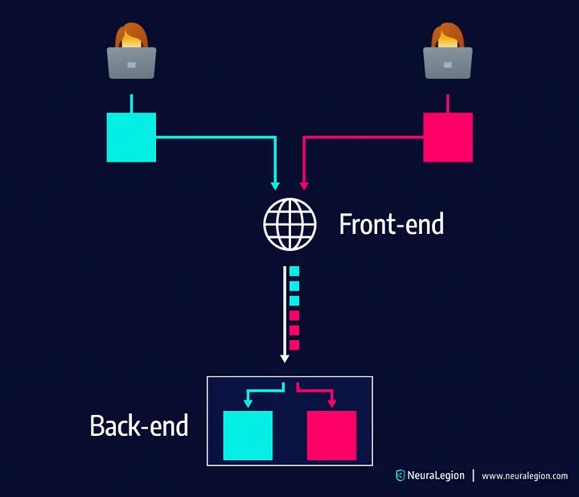

Halil İbrahim Direktör
Home
About
Resume
Portfolio
Media
1/
Articles

25/March/2025 - API
Simplify Server Setup with Docker Launcher Script

01/March/2025 - Database Management
How to Run InfluxDB in Docker: A Practical Guide

18/September/2024 - Embedded Development
STM32 ve ESP8266 için Captive Portal

19/August/2024 - API
Docker Üzerinde RabbitMQ Çalıştırma ve NodeJS Entegrasyonu

31/December/2023 - Embedded Development
STM32 Yazılımını OTA ile Güncelleme

15/November/2023 - Embedded Development
Sending HTTP Requests on Embedded Systems based USART
View Older Post